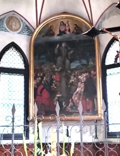

La splendida pala d’altare che abbellisce l’abside venne realizzata contemporaneamente al ciclo di affreschi di Girolamo dal Santo ed è opera del pittore veronese Bonifacio de’ Pitati. Il dipinto, che rappresenta la Predica dal noce di frate Antonio davanti ad una schiera di fedeli, alcuni dei quali nobili e molti semplici abitanti del luogo, testimonia la capacità di Antonio di rivolgersi a dotti e a semplici venendo capito da tutti, perché il suo linguaggio va dritto al cuore. La scena, animata e colorata, è organizzata su tre registri entro un paesaggio prospettico ampio e profondo che sembra dialogare direttamente con lo spettatore: quello superiore in cui è raffigurata la Madonna col bambino; quello centrale con il Santo orante che indica il bambino, e quello inferiore con la folla accorsa ad ascoltarlo. Tra le figure ritratte si possono individuare alcuni personaggi dell’epoca in cui l’opera fu commissionata: il podestà del luogo, Ermolao Pisani, seduto su un prezioso tappeto e vestito con abiti ufficiali da cerimonia, e, in piedi quello che, probabilmente, è lo stesso committente della pala e degli affreschi, ovvero Girolamo II Camposampiero.
